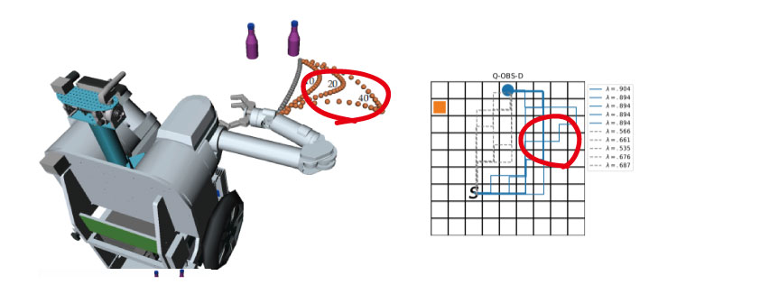
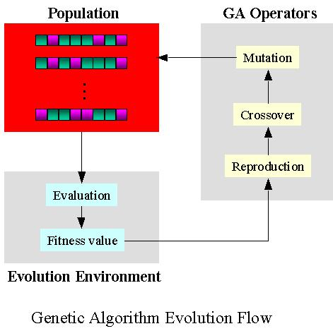
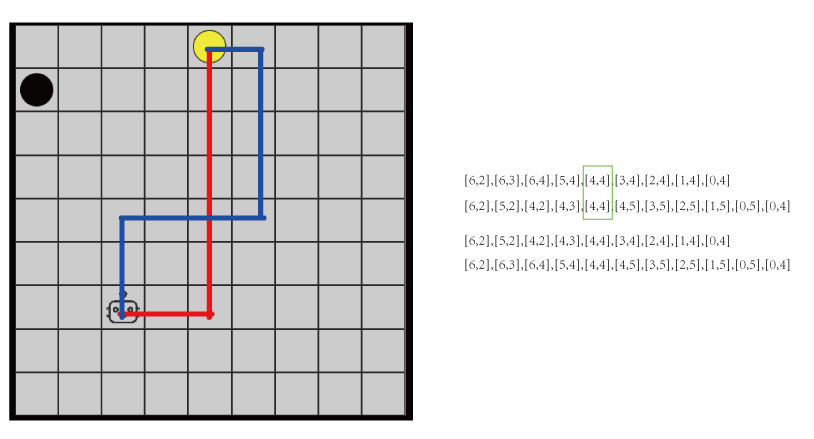
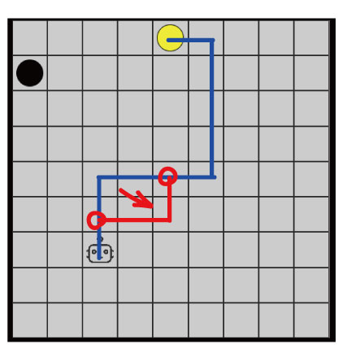
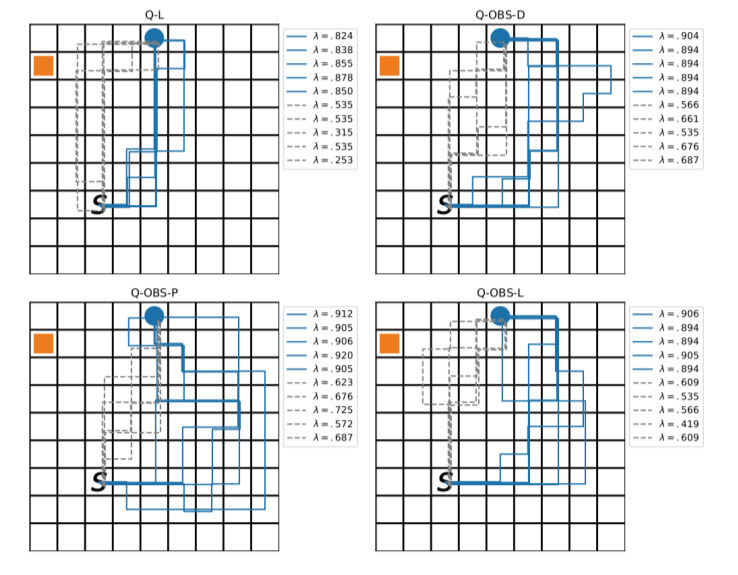
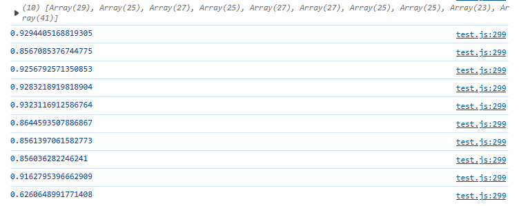

通过分析图片中每条可读性较高的路径可以发现可读性较高的路径在某种程度上具有一定的相似性(图片中的路径可能没那么相似，但是，红圈中间可以嵌入大量可读性较高的轨迹)，这种相似性使得我们想到是否可以用遗传算法来生成出来这种可读性较高的路径,因为我们已经根据Dragan与Bied的论文得到了可以衡量可读性的公式,我们可以将其作为适应度公式的参考。
于是按照遗传算法的一般步骤，进行了如下操作： 路径编码、种群初始化、定义适应度函数、选择算子、交叉算子、突变算子、以及最后分析实验结果。

将一条路径视为一个个体，将路径中的状态点视为基因(即二维坐标视为一个基因，也可称作染色体的一个位置或位点)。
如某个个体可以表示为：{[6,2],[5,2],[4,2],[3,2],[2,2],[1,2],[0,2],[0,3],[0,4]},多条路径(个体)构成了一个种群。
为保证初始路径的随机性，我们采用了蒙特卡洛随机搜索生成10条路径作为初始种群。为保证路径更为合理和方便计算，我们在生成路径的过程中，去除掉了有重复状态的路径，并对初始路径的长度进行了一定的限制。
我们直接采用Bied的定义的可读性公式作为衡量适应度的标准(相关链接)。 \[ \lambda(\xi) = \frac{\sum_{t} P(g^*|\xi_{s_0 \to s_t}) f(t)}{\sum_{t} f(t)} \]
算出每个个体的适应度(可读性)后，我们要重新定义每个个体被选择的概率，由于可读性公式中的
$\lambda(\xi)$是0到1之间的数值，因此直接可令其作为每个个体被选择的概率。之后计算其累积概率，用轮盘赌的方式进行个体的选择。概率越大越有可能被选中。
个体$i$的选择概率：$p(i) = \frac{f(i)}{\sum_{j=1}^N f(i)}$ 个体i的累积概率：$q(i) = \sum_{j=1}^i p(j)$，之后，根据生成的随机数选择首个$q(i) \geq r(随机数)$的个体。
本实验采用单点交叉法，即从当前种群中选择两个父代个体进行交叉操作。选择这两个父代个体中的共同状态点(起点、终点除外)，交叉之后，进行分割，如下图所示，又重新生成两个新的子代。
本实验采用的是局部突变的方案(局部路径重生成)，随机选择路径中的两个位置，确定一个子路径段。两个点之间的距离仍是由参数进行调控，以确保突变的程度，子路径段的生成仍是由蒙特卡洛的方法进行生成。 \[ \text{新的组合路径：}\xi' = [\xi[0 : i_{\text{start}}-1], \xi_{\text{mutation}}, \xi[i_{\text{end}}+1 : |\xi|]] \]
和Bied的实验结果进行对比:
 上图中，左图为作者Bied的各种奖励重塑方法产生的实验结果，右图为本实验的结果。作者进行的是100sessions每个session共120episodes,从中挑出10条路径(legibility值最大的5个，用蓝线表示。legibility值最小的5个，用灰线表示）。而本实验仅以开头的10条随机路径，只进行50代的循环，可以看出其legibility值已全面超越作者的各种奖励重塑方法。
通过一开始的猜想以及实验验证，发现遗传算法在处理此类问题上具有极大的优势。实现起来其逻辑更为清晰，直接从policy上进行优化，既可以避免奖励重塑方法中$\beta$对实验的影响($\beta$需反复实验，才能使得最终策略效果比较好)，也可以避免智能体在训练过程中出现的正反馈循环问题("刷分"现象，一个回合消耗了大量步数，仍难以到达终点)。同时，此算法表现依旧出色，少量的迭代，便能产生优质的结果。由于，其逻辑实现更为清晰，似乎将其扩展到更为复杂的系统中也变得容易起来，比如连续空间，复杂多智能体空间，动态空间，带地标的空间等等。也可更深入研究此算法，以配合实验3的工作，也可将其与强化学习方法结合起来一起研究。